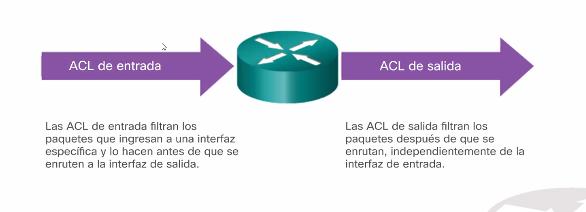

Wildcard:
Ya no es fultro de red (mascara de bured)
0 -> los bits que se van a comparar y tienen que ser igual a algo.
1-> los vamos a eliminar.
Diferencia con la mascara de red:
La mascara de red se usa para filtrar los bits de red una red (bits mas significativos). La WILDCARD es una cosa que filtra los bits que quieres.

Mascara de red:
0 -> eliminan
1 -> conservan
Wildcard:
0 -> buscar coindicencias
1 -> Cualquier valor sirve